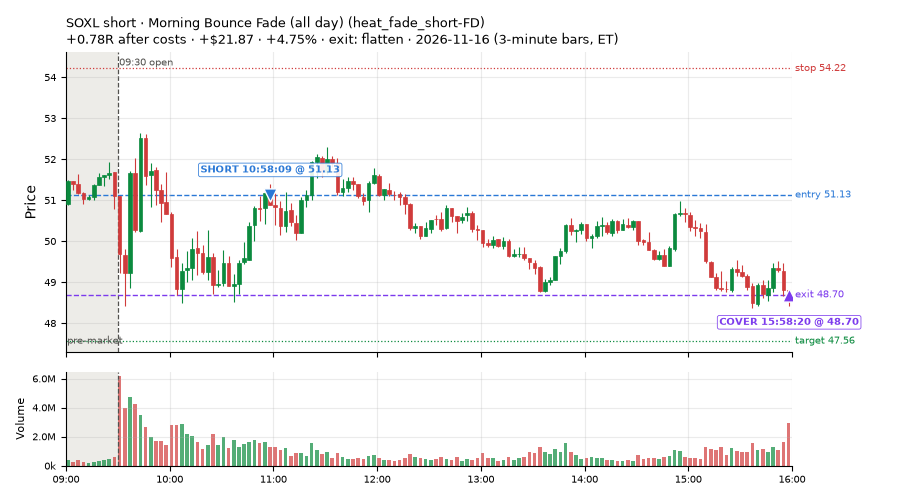
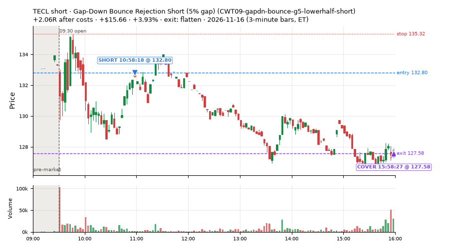
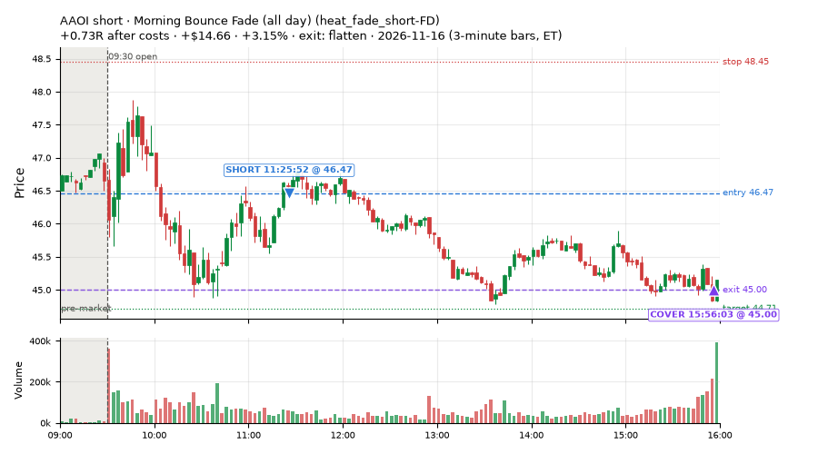
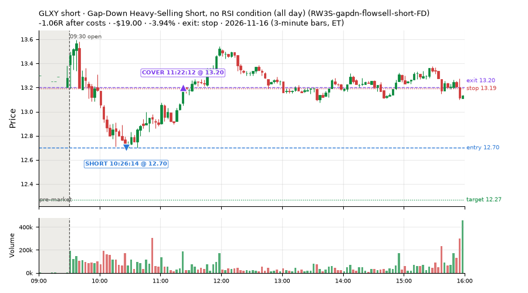
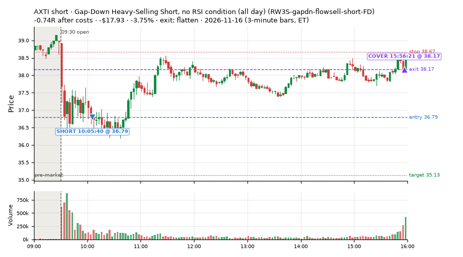
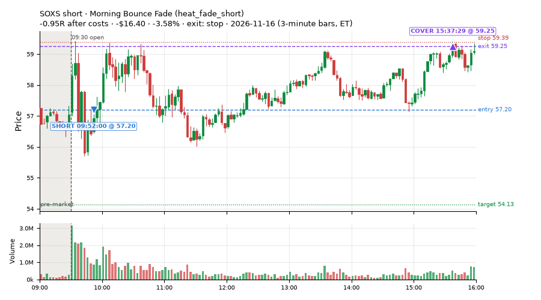
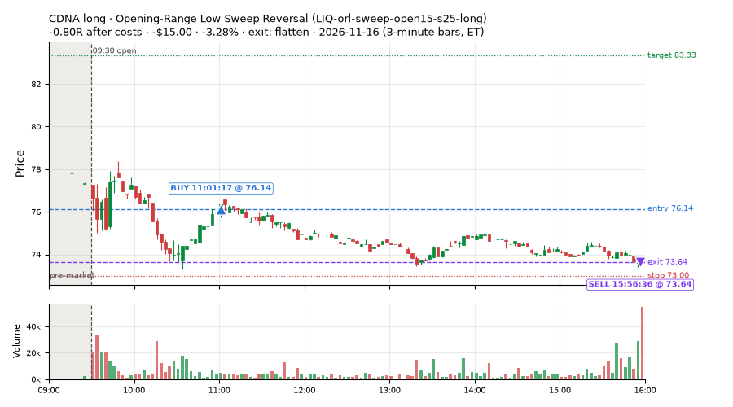
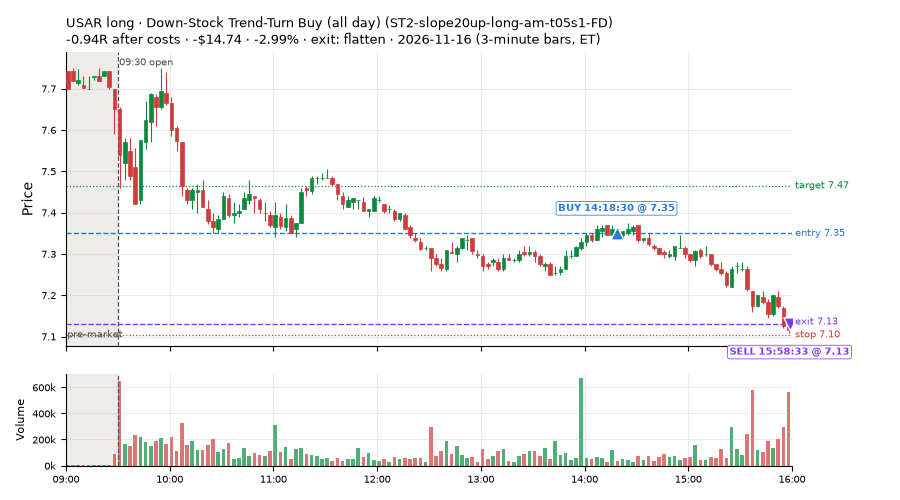

749 trades · win rate 55% · P/L $-129.63
PROBATION: no live setup has passed both locked test periods. 10 owner-directed setups added 2026-10-08 (MarcoFlow top 5 + 5 new), untested live. RW6G1 (RW6 + VWAP band guard) added 2026-10-09, probation.

| Symbol | Setup | Side | In | Out | Entry | Exit | Exit reason | % gained | P/L |
|---|---|---|---|---|---|---|---|---|---|
| SOXL | Morning Bounce Fade (all day) (heat_fade_short-FD) | short | 10:58 | 15:58 | 51.13 | 48.70 | flatten | +4.75% | $21.87 |
| TECL | Gap-Down Bounce Rejection Short (5% gap) (CWT09-gapdn-bounce-g5-lowerhalf-short) | short | 10:58 | 15:58 | 132.80 | 127.58 | flatten | +3.93% | $15.66 |
| AAOI | Morning Bounce Fade (all day) (heat_fade_short-FD) | short | 11:25 | 15:56 | 46.47 | 45.00 | flatten | +3.15% | $14.66 |
| Symbol | Setup | Side | In | Out | Entry | Exit | Exit reason | % lost | P/L |
|---|---|---|---|---|---|---|---|---|---|
| GLXY | RW3S-gapdn-flowsell-short-FD | short | 10:26 | 11:22 | 12.70 | 13.20 | stop | -3.94% | $-19.00 |
| AXTI | RW3S-gapdn-flowsell-short-FD | short | 10:05 | 15:56 | 36.79 | 38.17 | flatten | -3.75% | $-17.93 |
| SOXS | heat_fade_short | short | 09:52 | 15:37 | 57.20 | 59.25 | stop | -3.58% | $-16.40 |
| CDNA | LIQ-orl-sweep-open15-s25-long | long | 11:01 | 15:56 | 76.14 | 73.64 | flatten | -3.28% | $-15.00 |
| USAR | ST2-slope20up-long-am-t05s1-FD | long | 14:18 | 15:58 | 7.35 | 7.13 | flatten | -2.99% | $-14.74 |








Signal to fill: median 2s, 90th percentile 4s (749 trades). Bars close each minute; the order follows the bar close.
Best excursion (MFE): median 0.47R; worst (MAE) median 0.61R. 29% of trades never got +0.25R in our favour; 17 reached +1R and still closed at or below 0.
| Symbol | Setup | Best R | Worst R | Closed R |
|---|---|---|---|---|
| MARA | CWT09-gapdn-vwaploss-g5-short | +3.29 | -1.65 | -1.72 |
| VSXY | RW3S-gapdn-flowsell-short-FD | +2.38 | -1.17 | -2.43 |
| HUT | CWT09-gapdn-vwaploss-g5-short | +2.23 | -1.02 | -1.11 |
| TTD | CWT14-failbrk-orl-p10-long | +1.62 | -1.19 | -1.29 |
| TTD | CWT14-failbrk-orl-p10-lowvol-long | +1.62 | -1.19 | -1.29 |
| Entry time | Trades | Win | Avg R | P/L |
|---|---|---|---|---|
| 09:50-10:30 | 306 | 66% | +0.03 | $103.16 |
| 10:30-11:30 | 284 | 42% | -0.39 | $-286.65 |
| 11:30-13:00 | 79 | 62% | -0.03 | $22.26 |
| 13:00-14:00 | 27 | 52% | +0.08 | $19.28 |
| 14:00-16:00 | 53 | 58% | -0.04 | $12.32 |
| Setup | Trades | Win | Avg R after costs | Adj R (net of SPY) | Avg R ex-market (all sessions) | P/L |
|---|---|---|---|---|---|---|
| Gap-Down Bounce Rejection Short (5% gap) (CWT09-gapdn-bounce-g5-lowerhalf-short) | 19.0 | 42% | -0.13 | -0.41 | -0.33 (beta -1.08, n 145) | $1.39 |
| Gap-Down VWAP Loss Short (5% gap) (CWT09-gapdn-vwaploss-g5-short) | 39.0 | 3% | -1.19 | -1.04 | -0.42 (beta -3.34, n 137) | $-158.93 |
| Coil Under the High (4 bars) (CWT12-coil-k4-long) | 38.0 | 39% | -0.48 | -0.12 | -0.14 (beta +0.46, n 524) | $-51.73 |
| Coil Under the High (6 bars) (CWT12-coil-k6-long) | 10.0 | 10% | -0.99 | -0.71 | -0.19 (beta +1.26, n 178) | $-26.50 |
| Stretched Above VWAP Fade (CWT13-vwapstretch-z05-short) | 2.0 | 50% | +0.18 | -0.15 | -0.04 (beta -0.51, n 142) | $1.94 |
| Failed Opening-Range-Low Break Long (0.05 ATR) [fill] (CWT14-failbrk-orl-p05-long) | 66.0 | 65% | -0.01 | +0.09 | -0.09 (beta +0.80, n 1013) | $55.88 |
| Failed Opening-Range-Low Break Long (0.05 ATR, low volume) [fill] (CWT14-failbrk-orl-p05-lowvol-long) | 126.0 | 52% | -0.26 | -0.03 | -0.06 (beta +0.83, n 917) | $-75.61 |
| Failed Opening-Range-Low Break Long (0.1 ATR) [fill] (CWT14-failbrk-orl-p10-long) | 56.0 | 59% | -0.12 | +0.09 | -0.07 (beta +0.86, n 586) | $1.84 |
| Failed Opening-Range-Low Break Long (low volume) (CWT14-failbrk-orl-p10-lowvol-long) | 43.0 | 63% | -0.12 | +0.02 | -0.04 (beta +0.87, n 612) | $-8.29 |
| Failed Prior-Day-High Break Short (0.05 ATR, low volume) [fill] (CWT14-failbrk-pdh-p05-lowvol-short) | 31.0 | 74% | +0.10 | -0.19 | -0.15 (beta -0.76, n 392) | $22.45 |
| Failed Prior-Day-High Break Short (low volume) (CWT14-failbrk-pdh-p10-lowvol-short) | 6.0 | 83% | +0.23 | +0.19 | -0.17 (beta -0.90, n 206) | $6.04 |
| Failed Prior-Day-High Break Short (0.1 ATR) [fill] (CWT14-failbrk-pdh-p10-short) | 26.0 | 85% | +0.20 | -0.11 | -0.17 (beta -1.08, n 352) | $17.59 |
| Failed Prior-Day-Low Break Long (shallow) (CWT14-failbrk-pdl-p05-long) | 22.0 | 36% | -0.57 | -0.26 | -0.11 (beta +0.79, n 331) | $-37.39 |
| Failed Prior-Day-Low Break Long (0.05 ATR, low volume) [fill] (CWT14-failbrk-pdl-p05-lowvol-long) | 20.0 | 60% | -0.08 | -0.13 | -0.09 (beta +1.01, n 292) | $-2.22 |
| Opening-Range Low Sweep Reversal (LIQ-orl-sweep-open15-s25-long) | 29.0 | 7% | -0.91 | -0.29 | -0.15 (beta +0.43, n 243) | $-139.68 |
| Early Sellers Above VWAP (all day) (MF1-945-flowsell-vwapup-FD) | 7.0 | 57% | +0.57 | -0.18 | -0.17 (beta -1.99, n 102) | $2.78 |
| Early Sellers into a Pop (all day) (MF3-open-flowsell-rsi5hi-FD) | 17.0 | 82% | +0.51 | -0.03 | -0.08 (beta -1.20, n 140) | $32.60 |
| Sellers into Strength (full-day copy) (MF5-flowsell-vwapup-rsi5hi-FD) | 11.0 | 82% | +0.56 | +0.13 | -0.03 (beta -1.17, n 84) | $21.45 |
| Big Gainer Average Reclaim Fade (all day) (NS2-sma50break-overbought-short-FD) | 15.0 | 73% | +0.11 | -0.10 | -0.06 (beta -1.10, n 214) | $33.43 |
| Big Loser VWAP Reclaim Fade (all day) (NS3-failed-vwap-reclaim-short-FD) | 17.0 | 71% | +0.15 | +0.02 | -0.21 (beta -0.83, n 146) | $25.79 |
| Big Loser Flush Buy (all day) (NS5-sma50-flush-oversold-long-FD) | 3.0 | 33% | +0.09 | +0.15 | -0.07 (beta +1.19, n 33) | $0.83 |
| Big-Stock Blow-off Short (all day) (RW2-exhaustion-noon-adv150-short-FD) | 12.0 | 92% | +0.56 | +0.50 | -0.34 (beta -0.97, n 317) | $22.77 |
| Gap-Down Heavy-Selling Short, no RSI condition (all day) (RW3S-gapdn-flowsell-short-FD) | 32.0 | 62% | +0.02 | -0.20 | -0.37 (beta -0.98, n 32) | $-3.73 |
| Big-Stock VWAP Reclaim Fade (all day) (RW4-ns3-adv150-short-FD) | 11.0 | 82% | +0.28 | +0.10 | -0.19 (beta -0.58, n 101) | $27.09 |
| Big Gainer Fade, VWAP Band Guard (all day) (RW6G1-ns2-up3-vwap2sd-short-FD) | 2.0 | 100% | +0.41 | +0.18 | +0.11 (beta -0.44, n 35) | $10.54 |
| Opening-Range Breakdown Buy (all day) (ST1-ordn-long-pm-t05s1-FD) | 1.0 | 0% | -1.09 | -1.06 | -0.08 (beta +1.17, n 45) | $-11.52 |
| Down-Stock Trend-Turn Buy (all day) (ST2-slope20up-long-am-t05s1-FD) | 16.0 | 12% | -0.51 | -0.41 | -0.01 (beta +0.86, n 267) | $-81.70 |
| Midday Gap-Up Dip Buy (heat_fade_long) failed Apr-Jun holdout: -0.138R/trade over 1043 trades | 6.0 | 17% | -0.85 | -0.22 | +0.17 (beta +1.41, n 125) | $-20.50 |
| Midday Gap-Up Dip Buy (all day) (heat_fade_long-FD) | 7.0 | 29% | -0.22 | -0.04 | -0.17 (beta +1.37, n 149) | $-9.43 |
| Morning Bounce Fade (heat_fade_short) failed Apr-Jun holdout: -0.015R/trade over 1420 trades | 9.0 | 56% | +0.17 | -0.47 | -0.22 (beta -0.93, n 240) | $-0.16 |
| Morning Bounce Fade (all day) (heat_fade_short-FD) | 50.0 | 88% | +0.54 | +0.11 | -0.20 (beta -1.17, n 493) | $213.35 |
Market direction (SPY, beta 1) accounted for $21.99 of today's $-129.63; the rest ($-151.62) came from the setups themselves. Avg R net of SPY: -0.11 (incl. a hedge leg's cost; report only).
32 setups live today. Today: 2383 signals, 749 taken, 115 lost because another setup held the symbol (5%). Since 2026-10-21 (19 sessions): 26363 signals, 8779 taken, 1284 lost to other setups (5%). Peak open positions today 300 of 300 slots. Earnings blackout removed 410 symbols before scanning.
Simulated playing time (not live): 17528 what-if trades of signals not taken, avg -0.03R, 56% winners; of them 1283 lost to another setup (avg -0.04R).
Crowded out: NS2-sma50break-overbought-short · Starved: MF1-945-flowsell-vwapup-FD, heat_fade_long, heat_fade_long-FD, heat_fade_short-FD
| Prio | Setup | Today sig / taken | Sessions | Signals / taken / trades | Taken/day | Expected/day | Lost to other setups | Lost to (setup n) | Top skip reasons | SIMULATED: not-taken n / avg R / win | Verdict |
|---|---|---|---|---|---|---|---|---|---|---|---|
| 1 | Opening-Range Breakdown Buy (all day) ST1-ordn-long-pm-t05s1-FD | 1 / 1 | 19 | 66 / 45 / 45 | 2.37 | 3.49 | 1 | heat_fade_short-FD 1 | spread / quote / size 14, slots full 3, symbol held by another setup 1 | 21 / -0.05R / 57% | slow 11.8 entries/week; ~5 weeks to 60 trades |
| 2 | Big Gainer Average Reclaim Fade (all day) NS2-sma50break-overbought-short-FD | 23 / 15 | 19 | 450 / 214 / 214 | 11.26 | 17.08 | 15 | CWT12-coil-k4-long 10, CWT12-coil-k6-long 4, LIQ-orl-sweep-open15-s25-long 3 | spread / quote / size 62, not shortable / shorts off 58, per-setup cap 42 | 236 / +0.27R / 71% | ok 56.3 entries/week |
| 3 | Big Gainer Average Reclaim Fade NS2-sma50break-overbought-short | 8 / 0 | 19 | 220 / 8 / 8 | 0.42 | 5.74 | 126 | NS2-sma50break-overbought-short-FD 113, RW6-ns2-up3-short-FD 56, CWT12-coil-k4-long 9 | symbol held by another setup 126, spread / quote / size 50, not shortable / shorts off 20 | 212 / +0.39R / 76% | crowded-out 126 of 220 signals (57%) lost to setups already holding the symbol |
| 4 | Early Sellers Above VWAP (all day) MF1-945-flowsell-vwapup-FD | 22 / 7 | 19 | 356 / 102 / 102 | 5.37 | 23.94 | 7 | CWT12-coil-k4-long 4, CWT14-failbrk-orl-p05-long 2, CWT12-coil-k6-long 1 | daily loss cap 128, spread / quote / size 79, broker rejected 15 | 254 / -0.18R / 32% | starved 5.37 entries/day vs ~23.94 expected |
| 5 | Down-Stock Trend-Turn Buy (all day) ST2-slope20up-long-am-t05s1-FD | 29 / 16 | 19 | 682 / 267 / 267 | 14.05 | 24.03 | 41 | heat_fade_short-FD 21, CWT09-gapdn-bounce-g5-lowerhalf-short 8, CWT14-failbrk-orl-p10-lowvol-long 4 | daily loss cap 219, spread / quote / size 62, slots full 50 | 412 / +0.02R / 66% | ok 70.3 entries/week |
| 6 | Midday Gap-Up Dip Buy heat_fade_long | 10 / 6 | 19 | 204 / 125 / 125 | 6.58 | 30.36 | 21 | heat_fade_long-FD 12, NS3-failed-vwap-reclaim-short-FD 3, RW4-ns3-adv150-short-FD 3 | spread / quote / size 27, symbol held by another setup 21, daily loss cap 15 | 79 / -0.09R / 51% | starved 6.58 entries/day vs ~30.36 expected |
| 7 | Opening-Range Low Sweep Reversal LIQ-orl-sweep-open15-s25-long | 44 / 29 | 19 | 447 / 246 / 243 | 12.95 | – | 18 | CWT14-failbrk-orl-p05-lowvol-long 15, CWT14-failbrk-orl-p10-long 14, CWT14-failbrk-orl-p10-lowvol-long 13 | spread / quote / size 58, per-setup cap 57, daily loss cap 45 | 201 / -0.03R / 46% | ok 64.7 entries/week |
| 8 | Big-Stock Blow-off Short (all day) RW2-exhaustion-noon-adv150-short-FD | 24 / 12 | 19 | 934 / 317 / 317 | 16.68 | 50.34 | 16 | CWT12-coil-k4-long 5, NS3-failed-vwap-reclaim-short-FD 4, RW4-ns3-adv150-short-FD 4 | daily loss cap 377, not shortable / shorts off 98, spread / quote / size 79 | 617 / -0.05R / 51% | ok 83.4 entries/week |
| 9 | Midday Gap-Up Dip Buy (all day) heat_fade_long-FD | 19 / 7 | 19 | 444 / 149 / 149 | 7.84 | 51.74 | 59 | heat_fade_long 49, heat_fade_short-FD 4, heat_fade_short 4 | daily loss cap 162, spread / quote / size 70, symbol held by another setup 59 | 295 / -0.04R / 50% | starved 7.84 entries/day vs ~51.74 expected |
| 10 | Failed Opening-Range-Low Break Long (low volume) CWT14-failbrk-orl-p10-lowvol-long | 109 / 43 | 19 | 1169 / 612 / 612 | 32.21 | – | 14 | CWT14-failbrk-orl-p05-long 4, CWT14-failbrk-pdh-p05-lowvol-short 4, CWT14-failbrk-orl-p05-lowvol-long 3 | spread / quote / size 244, daily loss cap 157, slots full 75 | 553 / +0.08R / 60% | ok 161.1 entries/week |
| 11 | Failed Opening-Range-Low Break Long (0.1 ATR) [fill] CWT14-failbrk-orl-p10-long | 121 / 56 | 19 | 1383 / 586 / 586 | 30.84 | – | 27 | CWT14-failbrk-orl-p05-lowvol-long 17, CWT14-failbrk-orl-p05-long 17, CWT14-failbrk-orl-p10-lowvol-long 16 | daily loss cap 378, spread / quote / size 257, per-setup cap 53 | 792 / +0.03R / 62% | ok 154.2 entries/week |
| 12 | Morning Bounce Fade heat_fade_short | 19 / 9 | 19 | 575 / 240 / 240 | 12.63 | 31.76 | 1 | CWT14-failbrk-pdl-p05-lowvol-long 1 | spread / quote / size 140, per-setup cap 110, daily loss cap 59 | 335 / -0.23R / 39% | ok 63.2 entries/week |
| 13 | Failed Opening-Range-Low Break Long (0.05 ATR, low volume) [fill] CWT14-failbrk-orl-p05-lowvol-long | 273 / 126 | 19 | 2644 / 917 / 917 | 48.26 | – | 41 | CWT14-failbrk-orl-p10-lowvol-long 13, CWT14-failbrk-orl-p10-long 12, CWT14-failbrk-orl-p05-long 11 | daily loss cap 895, spread / quote / size 379, per-setup cap 198 | 1721 / +0.00R / 63% | ok 241.3 entries/week |
| 14 | Morning Bounce Fade (all day) heat_fade_short-FD | 132 / 50 | 19 | 1630 / 496 / 493 | 26.11 | 173.78 | 322 | heat_fade_short 240, LIQ-orl-sweep-open15-s25-long 20, CWT14-failbrk-orl-p05-lowvol-long 14 | symbol held by another setup 322, daily loss cap 312, spread / quote / size 241 | 1134 / -0.09R / 45% | starved 26.11 entries/day vs ~173.78 expected |
| 15 | Failed Opening-Range-Low Break Long (0.05 ATR) [fill] CWT14-failbrk-orl-p05-long | 369 / 66 | 19 | 3552 / 1013 / 1013 | 53.32 | – | 201 | CWT14-failbrk-orl-p10-lowvol-long 162, CWT14-failbrk-orl-p10-long 161, CWT14-failbrk-orl-p05-lowvol-long 159 | daily loss cap 1333, spread / quote / size 487, per-setup cap 325 | 2533 / -0.04R / 62% | ok 266.6 entries/week |
| 16 | Gap-Down Bounce Rejection Short (5% gap) CWT09-gapdn-bounce-g5-lowerhalf-short | 170 / 19 | 19 | 977 / 145 / 145 | 7.63 | – | 13 | CWT14-failbrk-pdl-p05-lowvol-long 4, CWT12-coil-k4-long 3, CWT14-failbrk-pdl-p05-long 3 | not shortable / shorts off 570, daily loss cap 98, spread / quote / size 89 | 828 / -0.04R / 48% | ok 38.2 entries/week |
| 17 | Failed Prior-Day-High Break Short (0.05 ATR, low volume) [fill] CWT14-failbrk-pdh-p05-lowvol-short | 74 / 31 | 18 | 1145 / 393 / 392 | 21.83 | – | 12 | CWT14-failbrk-orl-p10-long 4, CWT14-failbrk-orl-p05-long 4, CWT12-coil-k4-long 4 | daily loss cap 412, spread / quote / size 247, not shortable / shorts off 53 | 751 / -0.03R / 64% | ok 109.2 entries/week |
| 18 | Failed Prior-Day-High Break Short (low volume) CWT14-failbrk-pdh-p10-lowvol-short | 21 / 6 | 18 | 487 / 206 / 206 | 11.44 | – | 6 | CWT14-failbrk-orl-p10-long 3, CWT14-failbrk-orl-p05-long 3, CWT14-failbrk-orl-p05-lowvol-long 2 | spread / quote / size 141, daily loss cap 101, not shortable / shorts off 20 | 280 / -0.06R / 62% | ok 57.2 entries/week |
| 19 | Failed Prior-Day-High Break Short (0.1 ATR) [fill] CWT14-failbrk-pdh-p10-short | 63 / 26 | 17 | 782 / 352 / 352 | 20.71 | – | 13 | CWT14-failbrk-orl-p10-long 5, CWT14-failbrk-pdh-p05-lowvol-short 3, CWT14-failbrk-pdh-p10-lowvol-short 3 | spread / quote / size 242, daily loss cap 103, not shortable / shorts off 45 | 429 / -0.08R / 61% | ok 103.5 entries/week |
| 20 | Stretched Above VWAP Fade CWT13-vwapstretch-z05-short | 3 / 2 | 17 | 337 / 142 / 142 | 8.35 | – | 3 | LIQ-orl-sweep-open15-s25-long 1, CWT12-coil-k4-long 1, CWT12-coil-k6-long 1 | daily loss cap 131, spread / quote / size 25, not shortable / shorts off 23 | 195 / -0.10R / 46% | ok 41.8 entries/week |
| 21 | Gap-Down VWAP Loss Short (5% gap) CWT09-gapdn-vwaploss-g5-short | 187 / 39 | 16 | 1075 / 137 / 137 | 8.56 | – | 14 | CWT14-failbrk-orl-p05-long 5, CWT14-failbrk-pdl-p05-long 3, CWT14-failbrk-pdl-p05-lowvol-long 3 | not shortable / shorts off 674, spread / quote / size 96, slots full 60 | 926 / -0.21R / 35% | ok 42.8 entries/week |
| 22 | Coil Under the High (6 bars) CWT12-coil-k6-long | 34 / 10 | 15 | 619 / 179 / 178 | 11.93 | – | 26 | heat_fade_short 7, CWT14-failbrk-pdh-p10-short 6, RW2-exhaustion-noon-adv150-short-FD 4 | daily loss cap 205, spread / quote / size 143, broker rejected 54 | 440 / +0.10R / 45% | ok 59.7 entries/week |
| 23 | Coil Under the High (4 bars) CWT12-coil-k4-long | 90 / 38 | 13 | 1435 / 526 / 524 | 40.46 | – | 56 | RW2-exhaustion-noon-adv150-short-FD 16, CWT14-failbrk-pdh-p10-short 11, CWT14-failbrk-pdh-p05-lowvol-short 10 | per-setup cap 493, broker rejected 154, spread / quote / size 144 | 906 / -0.01R / 67% | ok 202.3 entries/week |
| 24 | Failed Prior-Day-Low Break Long (shallow) CWT14-failbrk-pdl-p05-long | 183 / 22 | 12 | 1517 / 331 / 331 | 27.58 | – | 6 | CWT14-failbrk-orl-p10-lowvol-long 3, CWT14-failbrk-orl-p10-long 3, CWT14-failbrk-orl-p05-lowvol-long 3 | daily loss cap 964, spread / quote / size 197, broker rejected 13 | 1180 / -0.05R / 62% | ok 137.9 entries/week |
| 25 | Failed Prior-Day-Low Break Long (0.05 ATR, low volume) [fill] CWT14-failbrk-pdl-p05-lowvol-long | 114 / 20 | 12 | 1073 / 292 / 292 | 24.33 | – | 26 | CWT14-failbrk-orl-p05-lowvol-long 22, CWT14-failbrk-orl-p05-long 15, CWT14-failbrk-orl-p10-long 13 | daily loss cap 538, spread / quote / size 189, symbol held by another setup 26 | 777 / -0.03R / 64% | ok 121.7 entries/week |
| 26 | Big Loser VWAP Reclaim Fade (all day) NS3-failed-vwap-reclaim-short-FD | 31 / 17 | 11 | 637 / 146 / 146 | 13.27 | 22.02 | 75 | NS3-failed-vwap-reclaim-short-FD 21, ST2-slope20up-long-am-t05s1-FD 19, RW4-ns3-adv150-short-FD 19 | daily loss cap 180, not shortable / shorts off 89, slots full 85 | 491 / -0.14R / 40% | ok 66.4 entries/week |
| 27 | Big-Stock VWAP Reclaim Fade (all day) RW4-ns3-adv150-short-FD | 25 / 11 | 11 | 477 / 101 / 101 | 9.18 | 17.34 | 89 | NS3-failed-vwap-reclaim-short-FD 42, RW4-ns3-adv150-short-FD 40, ST2-slope20up-long-am-t05s1-FD 17 | daily loss cap 106, symbol held by another setup 89, slots full 78 | 376 / -0.17R / 37% | ok 45.9 entries/week |
| 28 | Early Sellers into a Pop (all day) MF3-open-flowsell-rsi5hi-FD | 24 / 17 | 10 | 270 / 141 / 140 | 14.10 | 24.16 | 4 | ST2-slope20up-long-am-t05s1-FD 1, heat_fade_long 1, CWT14-failbrk-orl-p05-long 1 | daily loss cap 43, broker rejected 27, not shortable / shorts off 20 | 129 / -0.05R / 47% | ok 70.5 entries/week |
| 29 | Sellers into Strength (full-day copy) MF5-flowsell-vwapup-rsi5hi-FD | 15 / 11 | 10 | 172 / 84 / 84 | 8.40 | 15.47 | 2 | heat_fade_short 1, MF1-945-flowsell-vwapup-FD 1, MF3-open-flowsell-rsi5hi-FD 1 | broker rejected 33, daily loss cap 29, spread / quote / size 12 | 88 / -0.12R / 44% | ok 42.0 entries/week |
| 30 | Big Loser Flush Buy (all day) NS5-sma50-flush-oversold-long-FD | 4 / 3 | 9 | 67 / 33 / 33 | 3.67 | 6.32 | 5 | NS3-failed-vwap-reclaim-short-FD 3, RW4-ns3-adv150-short-FD 3, ST4-emadn-long-am-t1s05-FD 1 | daily loss cap 14, spread / quote / size 7, broker rejected 6 | 34 / +0.11R / 59% | ok 18.3 entries/week |
| 31 | Big Gainer Fade, VWAP Band Guard (all day) RW6G1-ns2-up3-vwap2sd-short-FD | 5 / 2 | 9 | 67 / 35 / 35 | 3.89 | 3.73 | 4 | RW6-ns2-up3-short-FD 3, NS2-sma50break-overbought-short-FD 2, RW6G1-ns2-up3-vwap2sd-short-FD 2 | not shortable / shorts off 20, symbol held by another setup 4, broker rejected 4 | 32 / +0.10R / 56% | ok 19.4 entries/week |
| 32 | Gap-Down Heavy-Selling Short, no RSI condition (all day) RW3S-gapdn-flowsell-short-FD | 137 / 32 | 1 | 137 / 32 / 32 | 32.00 | – | 1 | MF1-945-flowsell-vwapup-FD 1, MF3-open-flowsell-rsi5hi-FD 1, MF5-flowsell-vwapup-rsi5hi-FD 1 | daily loss cap 58, spread / quote / size 28, not shortable / shorts off 14 | 105 / +0.06R / 58% | ok 160.0 entries/week |
Every trade is attached as a CSV you can open and edit in Excel or Google Sheets. Live page: https://misiti15.github.io/MCF/live/